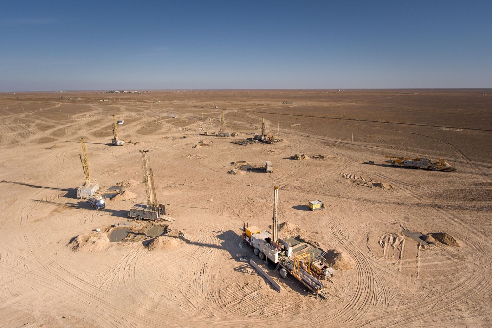

More Uranium, Higher Costs: Kazatomprom in 2025-2026
Output rose 11% in 2025. In early 2026 a new tax and dearer acid raised the cost of each pound by 37%.


Summary
Kazatomprom, the world's largest uranium producer, mined 25,839 tonnes of uranium in 2025, 11% more than in 2024. Revenue still slipped 1%, to ₸1.80 trillion, because the average selling price fell 6% and a one-off sale of enriched uranium in 2024 did not repeat. In the first half of 2026 the price rose 16%, but a higher extraction tax, dearer sulphuric acid and a stronger tenge raised cash cost per pound by 37%, and profit attributable to shareholders fell 23%.
Key findings
- Production rose 11% in 2025, to 25,839 tonnes of uranium (tU), and is 22% higher than in 2023.
- Revenue slipped 1%, to ₸1,803 billion. Natural uranium sales grew 16%, but ₸252 billion of enriched uranium sold in 2024 did not repeat.
- Asia took 56% of the uranium the Group sold in 2025, up from 45% in 2023.
- In the first half of 2026 the realized price rose 16%, cash cost per pound rose 37%, and profit attributable to shareholders fell 23%.
The world's largest producer is still growing
Kazatomprom says its own share of output was 20% of the world's primary uranium supply in 2025, and that all mines in Kazakhstan together produced about 39% of global output, citing the consultancy UxC. It sold 18,494 tU of natural uranium in 2025, 11% more than a year earlier. That part of the business earned ₸1,638 billion, up 16%, and made up 91% of revenue against 78% in 2024.
The rest of the 2024 revenue was enriched uranium sold to Ulba-FA, a fuel plant in Ust-Kamenogorsk: ₸252 billion, or 14% of the total. In 2025 this line was zero. Without it, 2024 revenue would have been about ₸1,561 billion, and 2025 would show growth of about 15% instead of a 1% fall.
Adjusted profit attributable to shareholders was almost unchanged at ₸570 billion. In July 2026 the company paid ₸335 billion of dividends for 2025, about 59% of that profit.
More of it goes to Asia
Asia's share of the Group's sales rose from 45% in 2023 to 56% in 2025, while Europe's fell from 29% to 19% (Table 1). The company splits sales by where the buyer's owner or decision-maker is based, not by country, so it does not show China on its own. China is visible in other parts of the report. Uranium for China leaves by rail through Alashankou, on the Kazakh-Chinese border. And Ulba-FA, a joint venture with Chinese partners set up in 2021, delivered fuel assemblies with slightly more than 200 tonnes of low-enriched uranium to Chinese nuclear plants in 2025, its full design capacity.
| 2023 | 2024 | 2025 | |
|---|---|---|---|
| Asia | 45% | 50% | 56% |
| Americas | 26% | 22% | 25% |
| Europe | 29% | 28% | 19% |
Region is the domicile of the buyer's ultimate owner or decision-maker. Source: Kazatomprom, 2025 review.
Shipments to the West go another way. In 2025, 48% of Western-bound uranium from Kazakhstan travelled by the Trans-Caspian route through Aktau rather than through Russia.
The company's price follows the market slowly
Most of Kazatomprom's uranium is sold under long-term contracts, and many of them follow the spot price with a delay. When spot jumped in 2024, the company's price rose less, and when spot fell 16% in 2025, its price fell only 6% (Figure 2). In the first half of 2026 the gap opened again: spot averaged $85.98 per pound, while Kazatomprom received $67.88.
In 2026 costs are rising faster than the price
In the first six months of 2026 revenue rose 9%, to ₸718 billion, because the realized price climbed 16%. But the cash cost of producing a pound (C1, on the company's attributable basis) rose 37%, from $17.86 to $24.48 (Figure 3). Of the $9.34 gain in price, $6.62 went on higher costs.
The company names three causes. From January 2026 the mineral extraction tax depends on how much each licence produces and on the uranium price; Kazatomprom's average rate rose from a flat 9% to 12.4%, and the tax it accrued doubled, to ₸120 billion. Sulphuric acid, which is pumped underground to dissolve the uranium, cost 39% more per tonne because of shortages in Kazakhstan. And a stronger tenge makes local costs bigger in dollars.
The acid problem will last longer than planned. Kazatomprom is building its own acid plant, but construction was suspended after possible paleontological finds on the site, and the start has moved from early 2027 to between the third quarter of 2027 and the first quarter of 2028.
Net profit fell 9%, to ₸240 billion, mostly because of exchange-rate losses and higher finance costs. The share left for Kazatomprom's own shareholders fell further, by 23%, to ₸157 billion, because more of the profit of partly owned mines went to their other owners. In August the company cut its 2026 revenue guidance from ₸2,200-2,300 billion to ₸2,100-2,200 billion and raised its C1 cost guidance to $25.50-27.00 per pound.
| 2023 | 2024 | 2025 | 1H 2025 | 1H 2026 | |
|---|---|---|---|---|---|
| Production, tU | 21,112 | 23,270 | 25,839 | 12,242 | 13,291 |
| Group sales, tU | 18,069 | 16,670 | 18,494 | 7,625 | 7,586 |
| Realized price, $/lb | 55.09 | 69.48 | 65.32 | 58.54 | 67.88 |
| C1 cash cost, $/lb | 13.27 | 16.59 | 18.06 | 17.86 | 24.48 |
| Revenue, ₸ billion | 1,435 | 1,813 | 1,803 | 660 | 718 |
| Adjusted EBITDA, ₸ billion | 829 | 1,097 | 1,133 | 363 | 371 |
| Profit to shareholders, ₸ billion | n/a | 577 | 570 | 202 | 157 |
Annual profit to shareholders is adjusted for one-off items; half-year figures had none. Sources: Kazatomprom, 2025 review; first-half 2026 review; 2024 review; 2023 review.
Growing more slowly on purpose
Kazatomprom is not trying to produce as much as its licences allow. In August 2025 it said its nominal 2026 production level would be about 10% lower, 29,697 tU instead of 32,777 tU. Its 2026 guidance is 27,500 to 29,000 tU, and the company says this depends on sulphuric acid being available.
Valuation
Kazatomprom's shares closed at ₸28,350 on the Kazakhstan Stock Exchange on 30 October 2026, a market value of about ₸7.4 trillion, or $16.2 billion (Table 3). That is 12.9 times adjusted profit to shareholders for 2025. The ₸335 billion dividend for 2025 works out at about ₸1,292 per share, a yield of 4.6%.
Cameco, the Canadian producer and Kazatomprom's best-known listed rival, trades at about 118 times its profit over the last twelve months. Cameco's own profit was small over that period, which inflates its multiple, so the comparison is rough. Still, investors pay far less for each tenge of Kazatomprom's profit, which fits the risks below: a tax that rises with the price and acid shortages that could cap output.
| Share price, 30 October 2026 | ₸28,350 |
| Market value | ₸7,353 billion (US$16.2 billion) |
| Price to 2025 profit (P/E) | 12.9 |
| Dividend yield | 4.6% |
Market value is the KASE price times 259.36 million shares. Sources: KASE; Stock Analysis (Cameco); Kazatomprom, 2025 review.
How it compares
Of the seven companies covered on this site, Kazatomprom is the fourth cheapest by price to 2025 profit. The table ranks them from lowest to highest.
| Company | Market value, US$ bn | P/E | P/B | Dividend yield |
|---|---|---|---|---|
| Halyk Bank | 9.0 | 3.8 | 1.12 | 15.6% |
| Geely Automobile | 19.0 | 7.5 | n/a | 3.6% |
| Kaspi.kz | 17.8 | 7.6 | n/a | 9.4% |
| Kazatomprom | 16.2 | 12.9 | n/a | 4.6% |
| KazMunayGas | 48.5 | 20.5 | n/a | 1.6% |
| Air Astana | 0.6 | 41.0 | 1.50 | none |
| China Southern Airlines | 6.3 | 48.9 | 1.17 | none |
P/E is the market value divided by 2025 profit; P/B uses the latest reported equity, where shown in the notes. A low P/E can mean a cheap share or a profit the market expects to fall. Sources: KASE; Stock Analysis; National Bank of Kazakhstan exchange rates.
Who owns the company
Kazatomprom is controlled by the state. The sovereign wealth fund Samruk-Kazyna holds 63.0%, and the Ministry of Finance holds 12.0%, a stake bought for the National Fund from Samruk-Kazyna in July 2024. The remaining 25% trades in London and on the Astana International Exchange. Decisions on output and dividends therefore follow the state's priorities as well as the market's.
Risks
- Profit depends on the uranium price, which fell 16% on the spot market in 2025 and rose again in 2026.
- The new extraction tax rises with both output and price, so it takes a larger share when the market is strong.
- Acid shortages could limit production until the company's own plant starts, now no earlier than late 2027.
- A stronger tenge lowers revenue in tenge and raises costs in dollars.
My view
I am not an expert in mining, so my view here is a simple one. I think Kazatomprom is right not to produce as much as its licences allow. Uranium is a resource that will run out one day, and there is little sense in selling more of it when the cost of every pound is rising. The higher tax also looks fair to me: the uranium belongs to the country, and when prices are high the budget should get a bigger share. What worries me is the same thing I saw in Kazakhstan's trade with China. More and more of the uranium goes to Asia as a raw material, while most of the steps that add value, such as enrichment, happen abroad. Ulba-FA, which makes nuclear fuel in Ust-Kamenogorsk, is a good example of what Kazakhstan could do more of. The next thing I will watch is whether the cost per pound stops rising once the acid shortage eases.
This note is independent research for information and learning. It is not investment advice or a recommendation to buy or sell any security.
Notes and method
- All figures come from Kazatomprom's own operating and financial reviews, listed under Sources. Production is on a 100% basis, which counts every mine the company consolidates or holds a stake in at full volume.
- Sales volumes and the average realized price cover natural uranium (U3O8) only. Enriched uranium sold to Ulba-FA in 2024 is in revenue but not in these volumes.
- Reported net profit for 2024 includes a one-off gain of ₸296 billion from taking control of the Budenovskoye joint venture, so annual figures use the company's adjusted net profit attributable to owners.
- "Revenue without enriched uranium" and the price-minus-cost comparison are calculated by the author from the reported figures, as are percentage changes.
Sources
- Kazatomprom, Operating and Financial Review for 2025 (March 2026)
- Kazatomprom, Operating and Financial Review for the first half of 2026 (August 2026)
- Kazatomprom, Operating and Financial Review for 2024 (March 2025)
- Kazatomprom, Operating and Financial Review for 2023 (March 2024)
- Kazatomprom, 1H2025 Results and 2026 Production Strategy (London Stock Exchange RNS, August 2025)
- Kazakhstan Stock Exchange (KASE), share pages for KSPI, HSBK, KZAP, KMGZ and AIRA, trades on 30 October 2026
- Stock Analysis, valuation statistics (price to earnings over the last twelve months) for Nu Holdings, Cameco and BYD, 31 October 2026
- Kazatomprom, Changes in Kazatomprom's shareholding structure (London Stock Exchange announcement, July 2024)
Download
Chingiz Bakytzhanov (2026). More Uranium, Higher Costs: Kazatomprom in 2025-2026. Steppe & Silk Research, 23 October 2026. https://steppesilk.com/research/kazatomprom-2025.html
Found an error? Email chingiz.bakytjanov@gmail.com. Corrections are listed here with their date.